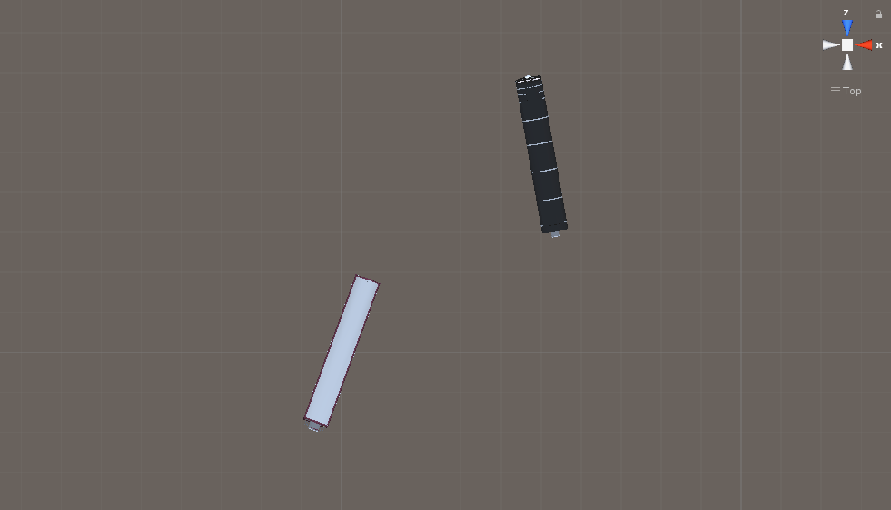
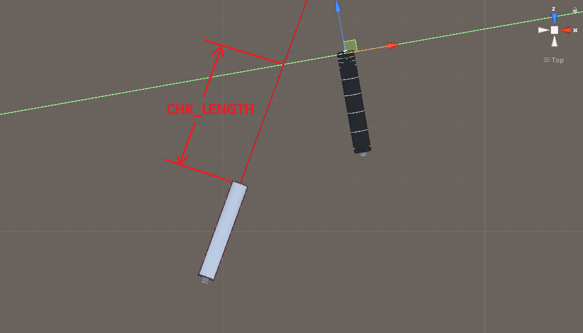

CPUの位置判定・距離測定の仕様書
これは、CHK_POSTION（CPUが自分より前か後ろかの判定）と
CHK_LENGTH（CPUと自分がどれほど離れているかの測定）を分析した仕様書である。
まず、この二つの判定は「BoxCollider」を使う。
中心座標はデフォルトの（0, 0, 0）だけど
XYZのサイズが（50000, 1, 0.01）で定義されている
つまり、BoxColliderがこのようになっている。
まず、CHK_POSTIONの判定は、基本的に「FJ」と「BodyTopPos」を使って測定する
FJ：FrontJointの略字と思われる。前方のカプラー
BJ：BackJointの略字と思われる。後方のカプラー
BodyTopPos：1両目のTopの位置。またこの位置を基準にコミックスクリプトや駅表示などのイベントが発動する
相手の「BodyTopPos」の位置にBoxColliderを配置し
自分の「FJ」の位置からスタートして、車両が向いている向きに
最大距離999999までラインを描画する。
（厳密は、Y座標を0で変換した位置である。
つまり上から見たラインと2次元の四角いColliderと考えても良い）
１．ラインがBoxColliderに当たった場合、CPUは自分より前
２．当たってない場合、今度は「FJ」の位置からスタートして、
車両の反対方向の向きに、最大距離999999までラインを描画する。
ラインがBoxColliderに当たった場合、CPUは自分より後ろ
３．もしこれも当たり判定がなかった場合、下記の方法で再測定する
相手の「BodyTopPos」の位置と、自分の「FJ」の距離、「BJ」の距離をそれぞれ測定する。
・もし「FJ」の距離が「BJ」の距離より小さい場合、CPUは自分より前
そうでなければ、CPUは自分より後ろと判定する。
・CPUと自分の距離は「FJ」の距離を使う。

少し極端だけど、プレイヤーは阪急2000系、CPUはX200系
それぞれの電車がこのように配置されていると
プレイヤーの「FJ」の位置からスタートするライン（赤い線）が
相手の「BodyTopPos」の位置にあるBoxColliderに当たっているか判断する。
図の場合、当たっているのでCPUが自分より前と判断する。
最初の条件で当たったものがなければ、今度は
プレイヤーの「FJ」の位置からスタートして逆方向へのライン（赤い線）が
相手の「BodyTopPos」の位置にあるBoxColliderに当たっているか判断する。
つまり図の場合、当たっているのでCPUが自分より後ろと判断する。

また、当たり判定がある場合、距離測定も同時に行われる。
図の場合、「FJ」の位置からスタートして、ヒットした点までの距離が
CHK_LENGTHで使われる。